Color interior · 8.5 × 11 · draft
A coloring book interior. Twelve original plates. Not a live Amazon listing.
Line art in this pack is original geometry for this SKU. No licensed characters.
This file is an unpublished draft. It has no ISBN and no ASIN. Do not invent either.
Printing a personal proof is fine. Selling a copy requires a real KDP upload by the rights holder.
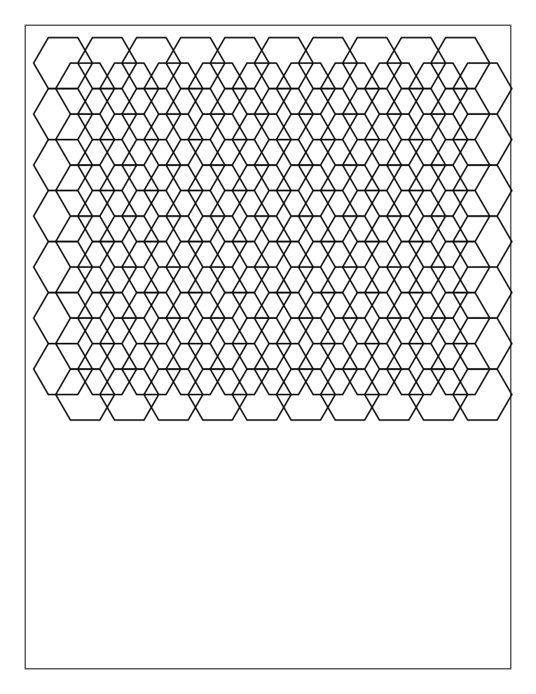
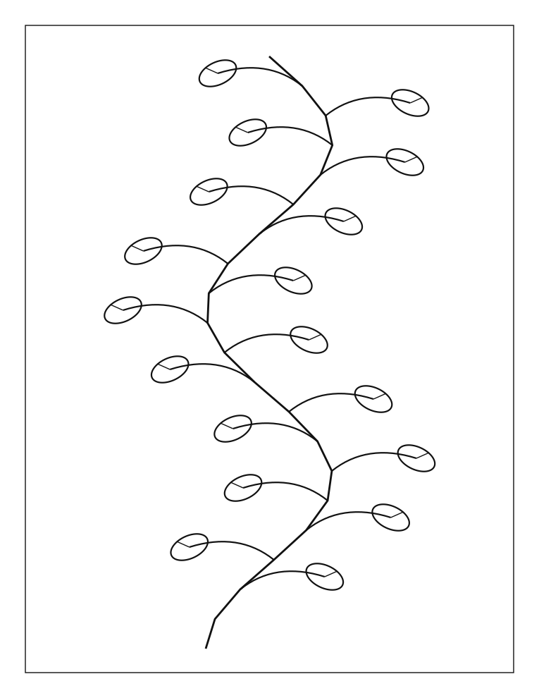
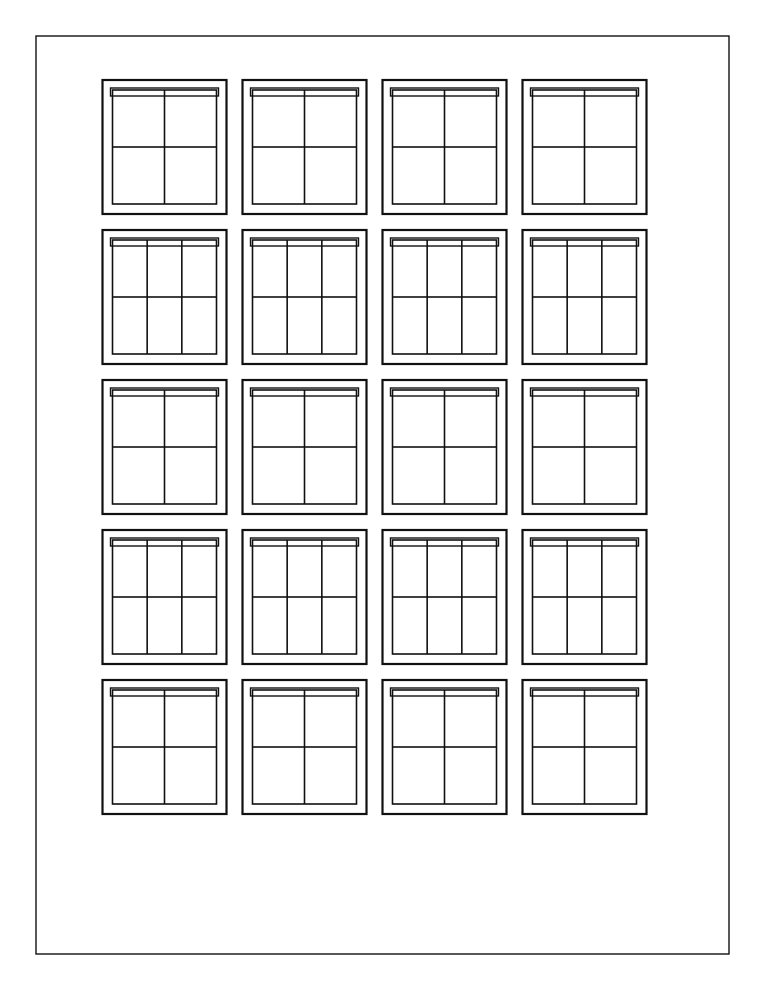
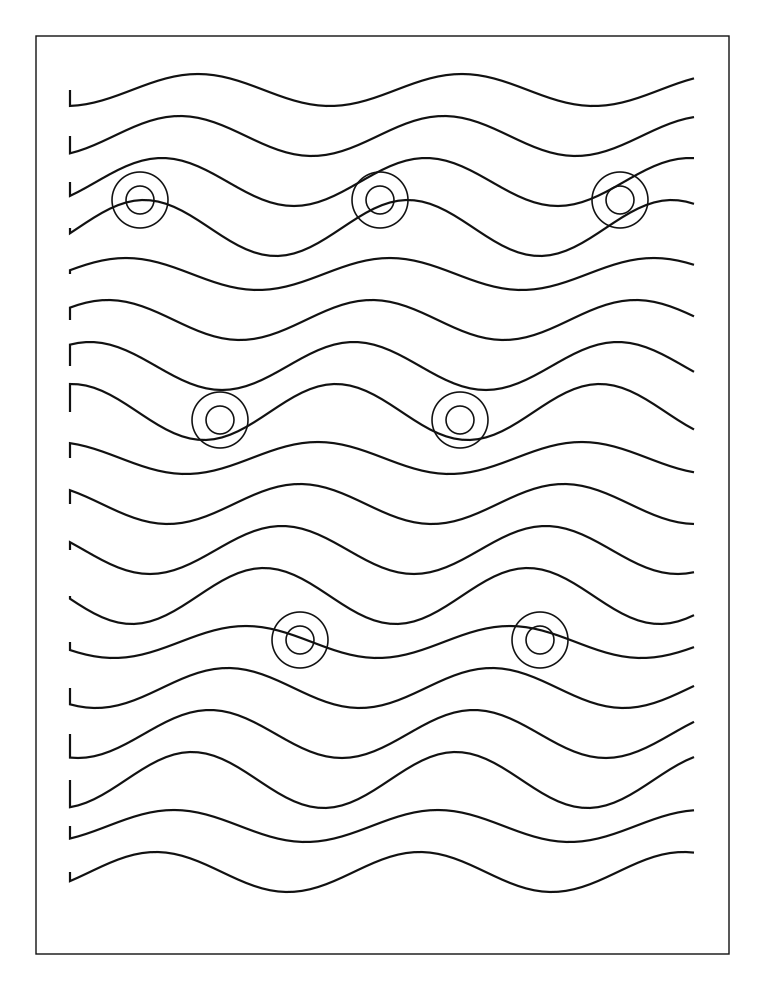
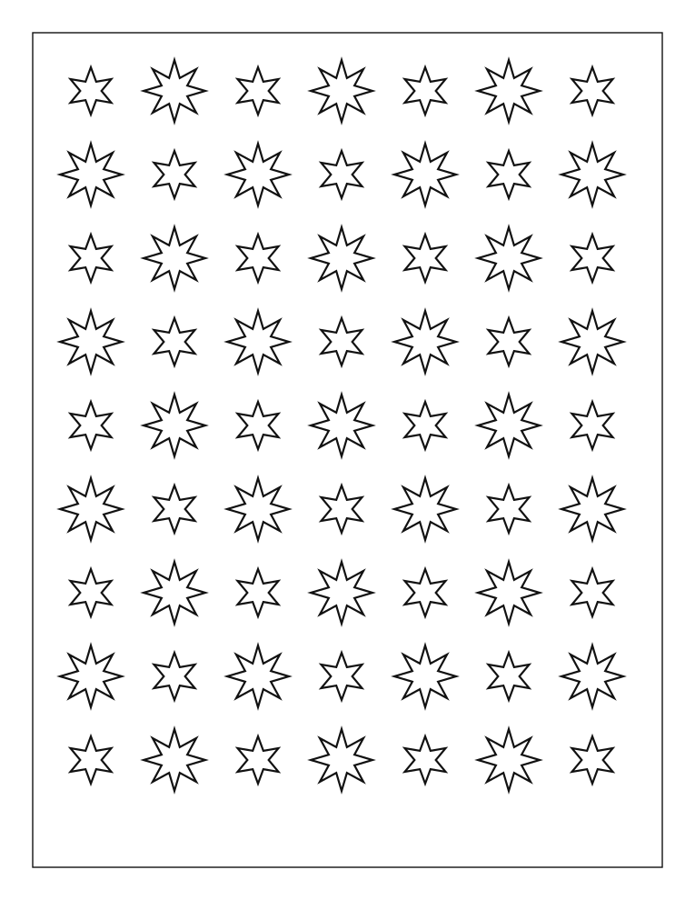
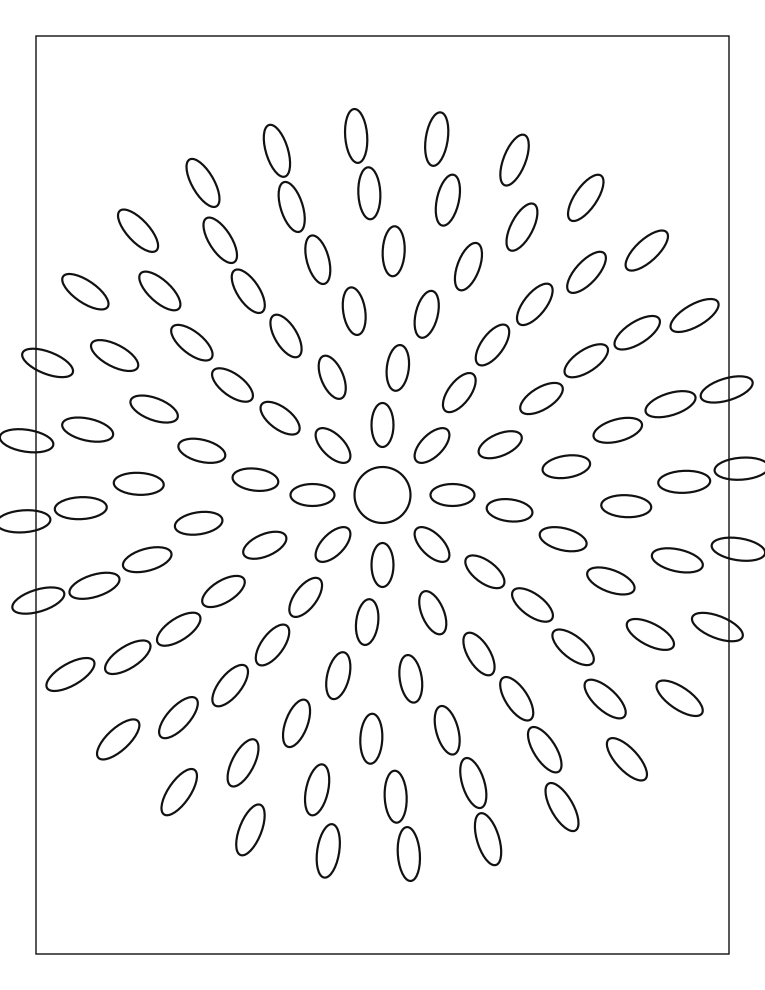
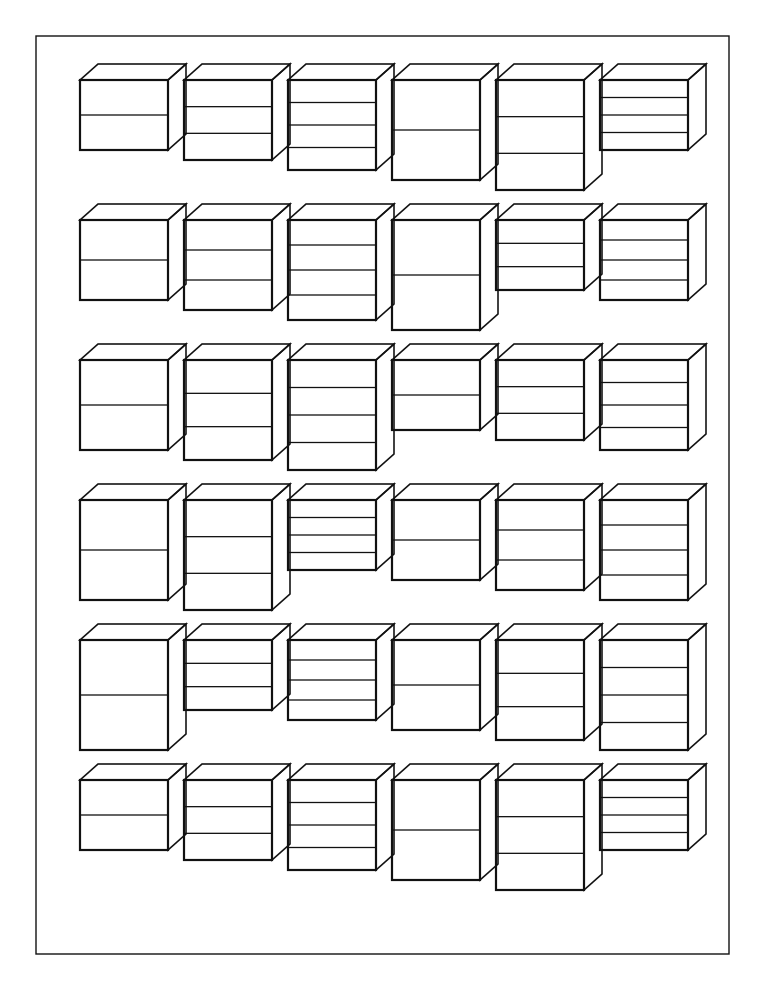
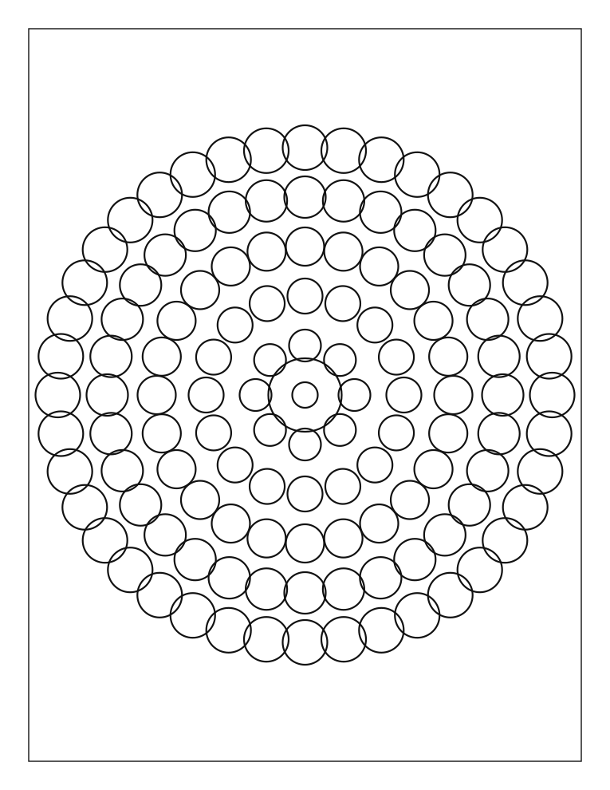
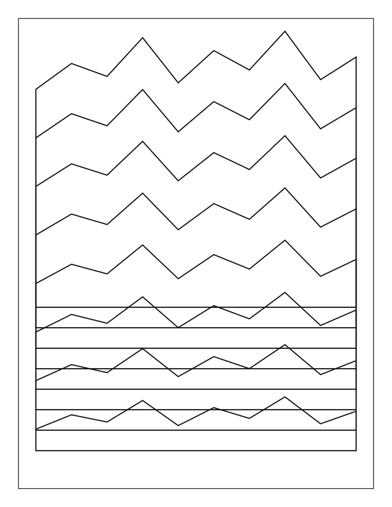
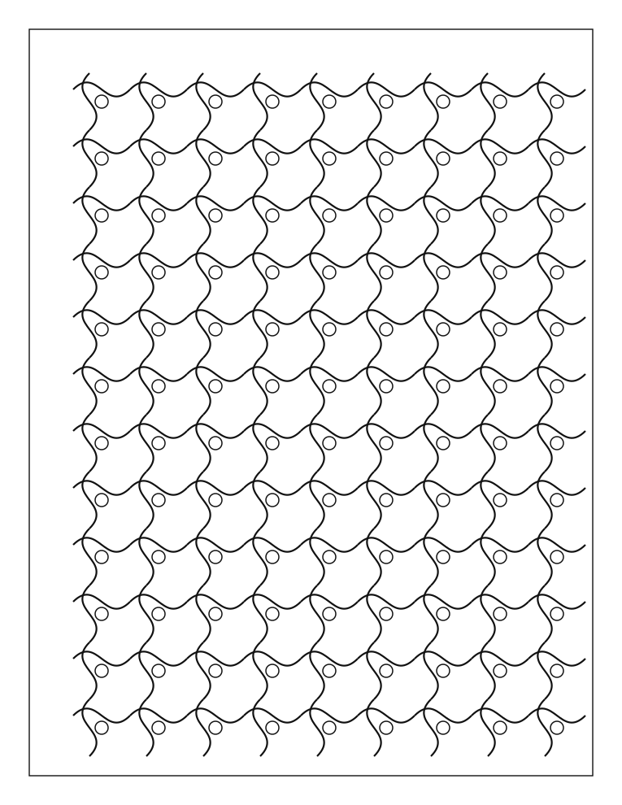
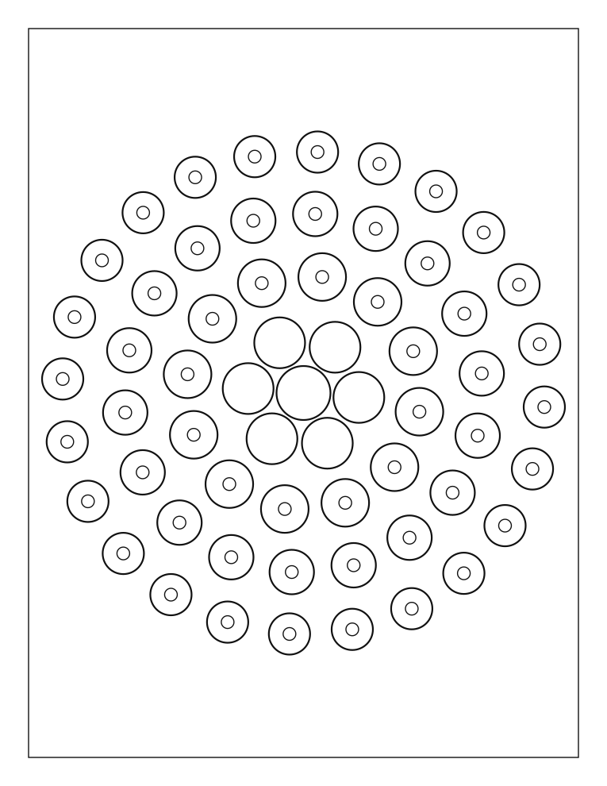
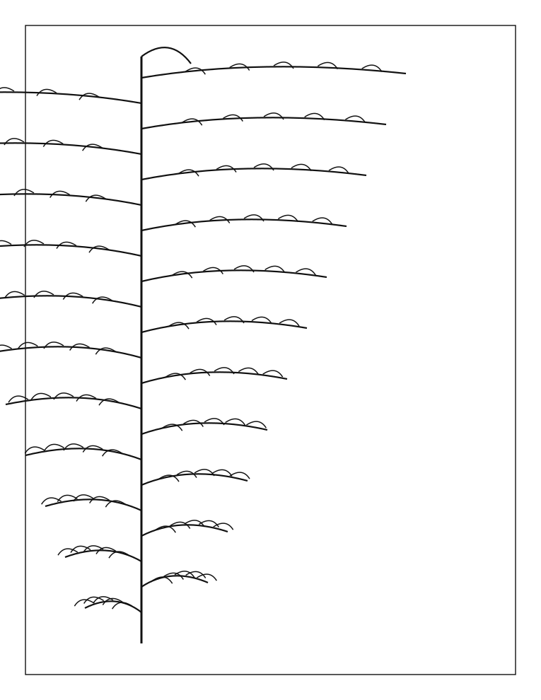
Try two colors in the boxes. Write the names you actually used.
Warm row, cool row. Leave one box empty on purpose.
One medium per box. Date the page if the ink shifts.
Write one subject you still want drawn. Do not copy a licensed character.
Twelve subjects: hex grid, vine, windows, waves, stars, radial leaves, block plan, flower wheel, ridgelines, interlace, circle pack, fern.
None of these pages is a repeat of another plate.
A working leaf, not a cloned drawing.
Open Plate · unpublished draft · no checkout in this file.